Source: Dr. Amir workshop — GIT 2026 / class 7 Lower GI (Aug 2026 drop) · Specialty: gastroenterology
This is a group of related lower-GI diarrhoea stations. The core Version 2 case is a middle-aged man with acute diarrhoea, a history of recent antibiotics, and signs of dehydration (dry mucosa = moderate-severe). The stem is deliberately large with 'unnecessary' information, and there may be no history or examination to perform - the candidate must reason to a diagnosis and plan investigations/management.
The concept being tested is ruling out pseudomembranous colitis (Clostridioides difficile infection), a serious antibiotic-associated condition, rather than dismissing symptoms as a routine antibiotic side effect. Later versions (V3, V4) pivot toward bowel cancer or a post-operative context, so the candidate must follow the findings rather than the recall.
Caused by antibiotics (classically clindamycin, also cephalosporins, fluoroquinolones and others) disrupting gut flora and allowing overgrowth of toxin-producing C. difficile. At sigmoidoscopy, characteristic pseudomembranes are seen.
Severe features: abdominal pain, diarrhoea, tenesmus, fever, +/- blood in stool.
Non-severe features: watery diarrhoea, cramping, low-grade fever, nausea, anorexia. Symptoms may begin during or after antibiotic therapy, sometimes weeks later.
Introduce yourself, build rapport, use open questions before giving the diagnosis: "Can you tell me what has happened so far?" Respond to concerns, then explain: "I'm concerned you may have a condition called pseudomembranous colitis. Antibiotics can disrupt the normal balance of bacteria in your gut, allowing a bug called Clostridioides difficile to overgrow. It produces a toxin that causes the diarrhoea."
Explore the diarrhoea: timing/onset, continuous vs intermittent, getting worse, nocturnal, CCCVO (count, consistency, content, volume, odour), aggravating/relieving factors, and impact on life. General GI review: nausea, vomiting, bloating, flatus, constipation (diarrhoea can follow impacted stool - overflow), fever, abdominal pain.
Red-flag screen (even for 2-week diarrhoea): loss of weight, loss of appetite, lumps and bumps, tiredness, blood in stool, change in bowel habit, past/family history of bowel cancer; if >50 years, ask about bowel cancer screening. A positive red flag or a positive examination finding (e.g. rectal mass, hepatomegaly suggesting metastasis) shifts the diagnosis toward colorectal cancer.
Version 3 (Oct 2025): Full examination is expected - general appearance (dehydration, rash, level of consciousness, pallor), vital signs including postural drop, temperature; abdominal core examination (inspection, palpation, percussion, auscultation, inguinal, DRE with consent and chaperone); brief thyroid examination for structure; urine dipstick (ketones if dehydrated). If a rectal mass plus large liver is found, consider colorectal cancer with liver metastases.
Version 4 (Aug 2025): A post-operative patient with an observation chart to interpret. This version does not ask for DDx up front - explore the diarrhoea and the specific context (previous bowel cancer/surgery, treatments received, follow-up, post-op complications, tolerance of oral intake). Clarify the antibiotic and duration. Investigations focus on C. difficile toxin PCR, stool MCS, FBE/ESR/CRP/UEC. Interpret the obs chart trend (e.g. rising BP and temperature, rising HR over 4 days) as clinical deterioration.
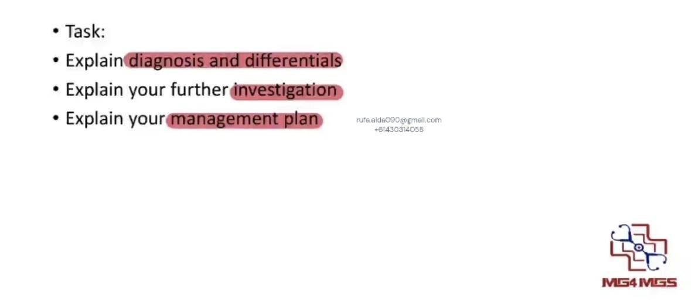
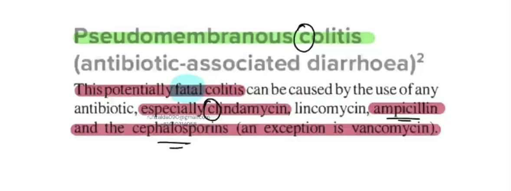
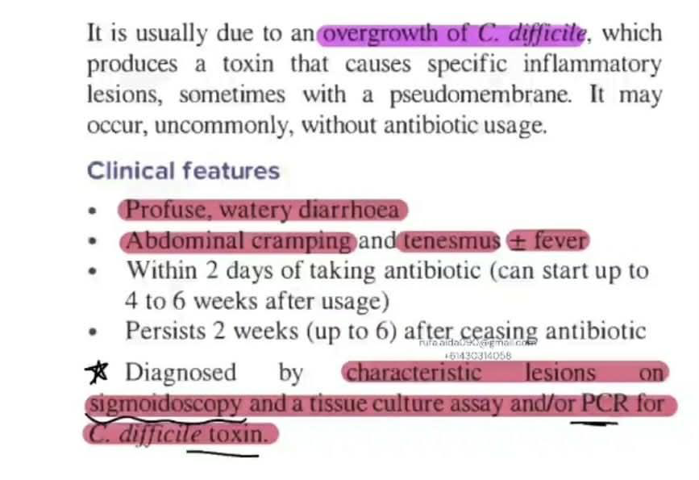
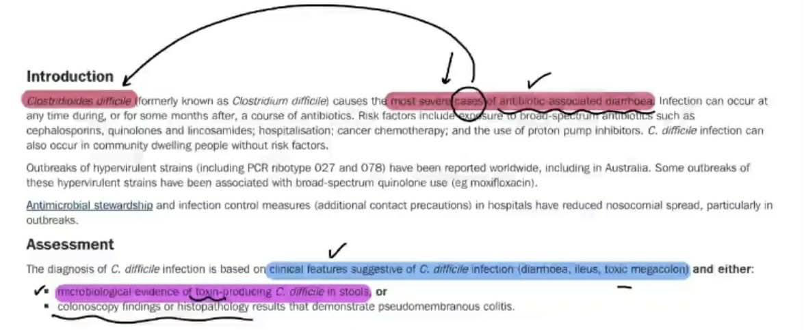
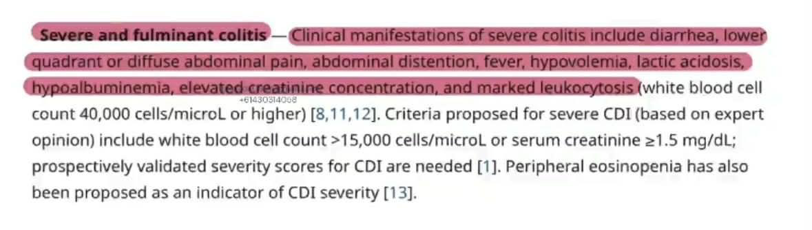
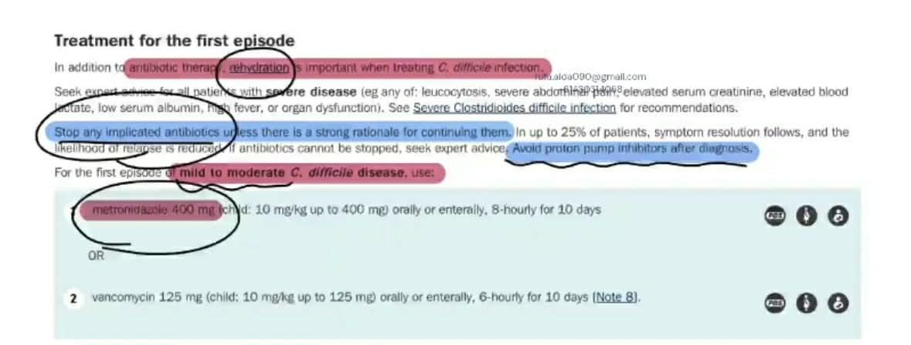
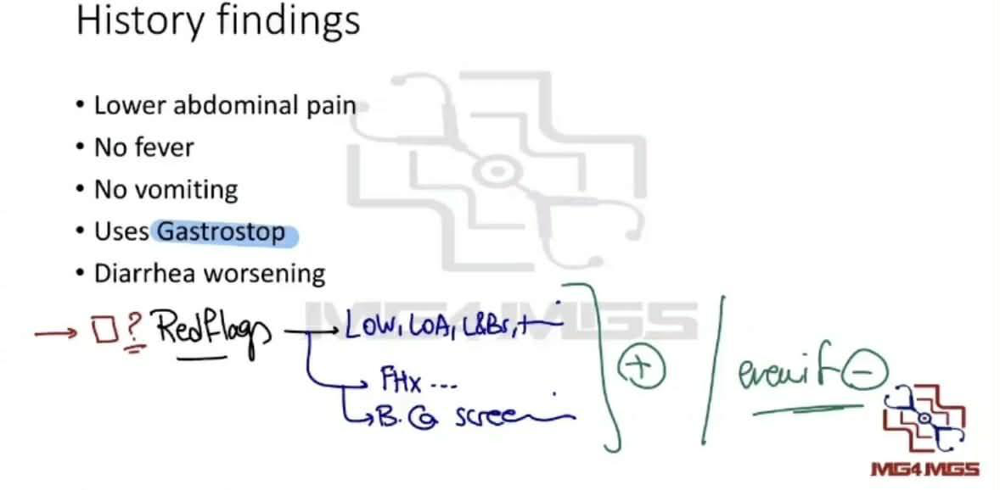
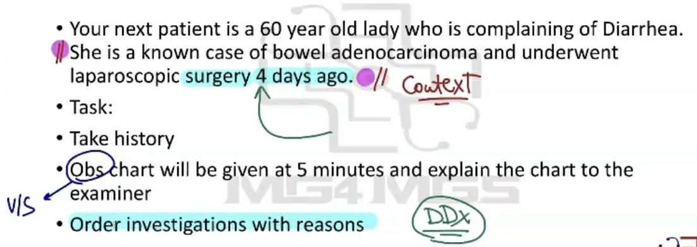
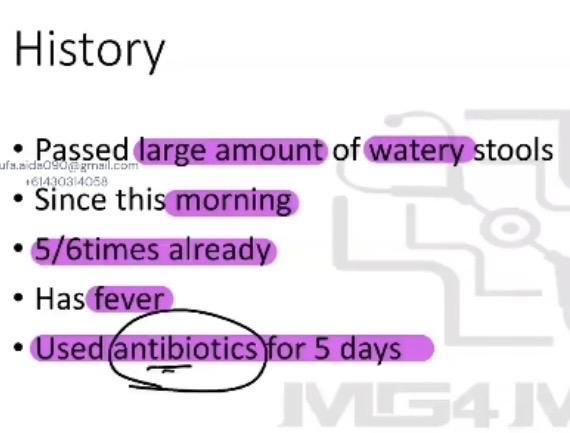
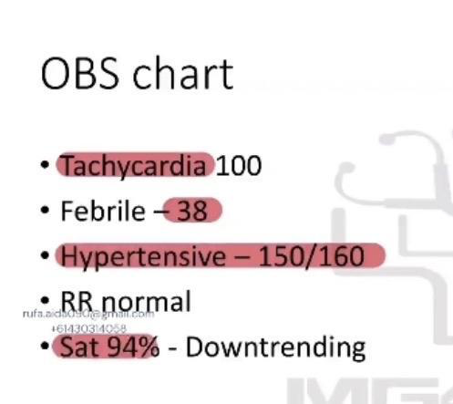
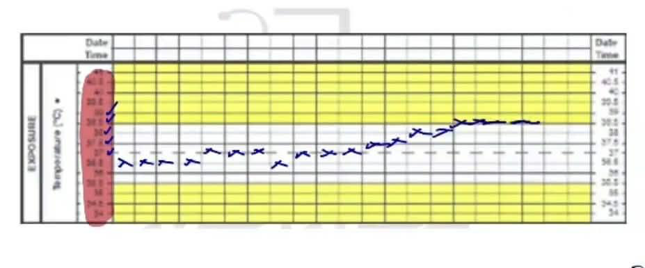
Reviewed by: history-taking-expert (Australian clinical supervisor) · fact-checked against the irStudy medical textbook RAG index.